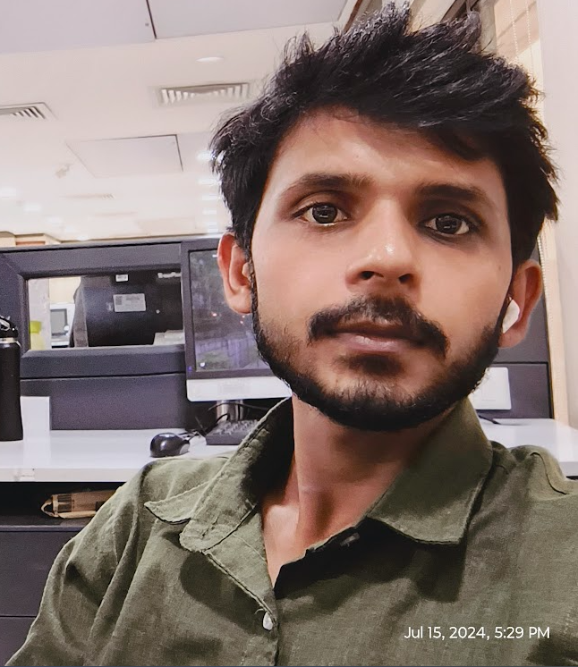

|

|
I am a passionate software engineer with expertise in problem-solving and
algorithmic thinking. I love to explore various technologies and frameworks
to develop efficient and scalable solutions, With a strong foundation in
data structures and algorithms, I strive to create robust and optimized code.
I am constantly expanding my skills and staying up-to-date with the latest
advancements in the field of software development.
|
Education
- Bachelor of Technology in Information Technology, Integral University Lucknow
- St. Mary's Inter College
Work Experience
Software engineer, Nagarro
March-03-2022 to aug-2024
- Developed and maintained web applications using html css and javaScript
- Collaborated with cross-functional teams to design and implement software solutions
- optimized code performance and improved applications.
Software engineer, Calance
aug-2024 to present
- Developed and maintained web applications using html css and javaScript
- Collaborated with cross-functional teams to design and implement software solutions
- optimized code performance and improved applications.
Skills
- java
- C++
- javaScript
- html
- css
- Sql
- pyton
Achievements
- Participated in the North Zone National University Basketball Championships 2021-22 held in Kurukshetra, Haryana.
- Served as the Student Sports Coordinator at Integral University.
- Winner in Hackathon & Debate held at Nagarro.
Projects
- Library Management System
Library Management Application - developed a web applicaiton by using java and mysql server.
GitHub Link: Library
- Uber Ride Clone App
Uber Ride Application - developed a web applicaiton by using java and mysql server.
GitHub Link: UberRideClone
- My Learning
Assignments - developed a web applicaiton by using java and mysql server.
GitHub Link: AssignmentTwo
Frequently Asked Question:
Question : what is your name.?
Zeeshan Ansari
Question: What is your first school name?
New Light.
Question: What is your address?
Mohalla gandhi nager noorpur bijnor.